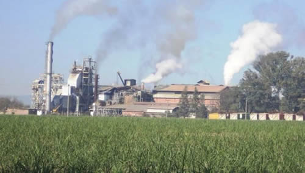

Real Chubut - Agencia de Noticias


Cerró el ingenio azucarero más antiguo de la Argentina: 730 despedidos

Cesa por completo la actividad del complejo ubicado en el departamento de General Güemes, a 45 kilómetros de la capital salteña. El gobernador Juan Manuel Urtubey desistió de ir al Foro de Davos para ocuparse de la situación.
Cerca de 730 empleados fueron despedidos por el ingenio azucarero San Isidro, que comunicó el cierre definitivo de sus puertas en la localidad de Campo Santo, departamento de General Güemes, a 45 kilómetros de la capital salteña.
La empresa le presentó su Procedimiento Preventivo de Crisis a sus trabajadores, luego de haberlo presentado en el ministerio de Trabajo, orientado a permitir las acciones que resulten necesarias para “cesar las operaciones de la empresa”.
Voceros del Sindicato de Trabajadores del Azúcar informaron que pedirán al Gobierno nacional y provincial que intervengan para frenar el cierre dado que, entienden, se trata de una maniobra de la empresa para reducir el personal y presionar de cara a las próximas paritarias.
Por su parte, Carlos Montalvo, gerente general del ingenio, descartó esas versiones al afirmar que es una “determinación irrevocable” y que el proceso para “el cierre definitivo de la planta ya está en marcha”.
“No es la primera vez que hacemos un anuncio de aplicación de procedimiento, pero bueno, los resultados del ingenio simplemente no dan para más”, afirmó el directivo en declaraciones al diario El Tribuno.
El Grupo Gloria, la compañía de capitales peruanos que desde 2011 controlaba el establecimiento, dijo que existen “poderosas razones” de orden económico, financiero y laboral que determinaron “la imposibilidad” de continuar con la producción.
Tras una inversión de 50 millones de dólares hace siete años, Montalvo consideró que “claramente el modelo de negocio está muy deprimido por una plataforma que afecta no solo a San Isidro sino a la industria azucarera argentina”.
"Y más allá de la industria argentina, en la Bolsa de Nueva York, donde cotizan los commodities, hay una guerra en la defensa de los precios. Es una situación de amenaza permanente para la industria. Tenemos un tema estructural que hace que esta actividad no sea viable, por eso la decisión”, remarcó.
Este ingenio, considerado el más antiguo del país, esta conformado por 11.000 hectáreas de tierras, de las cuales 3.500 hectáreas se encontraban destinadas a la producción de caña de azúcar, y el resto eran bosques naturales y tierras aptas para el desarrollo de proyectos ganaderos.
La Fábrica de Azúcar tiene una capacidad instalada para procesar entre 3.400 a 3.700 toneladas de caña por día, con una producción diaria de 340 a 370 toneladas de azúcar.
La compañía exportaba a mercados exigentes como Estados Unidos, Canadá, Suiza, Bélgica, Italia, España, Alemania, Holanda, Japón Israel y Nueva Zelanda.
Urtubey suspendió su viaje a Davos
Como consecuencia del cierre del ingenio San Isidro, el gobernador de Salta Juan Manuel Urtubey agradeció la invitación del presidente Mauricio Macri y anticipó gestiones para que los trabajadores y la empresa lleguen a un acuerdo justo.
En un comunicado oficial, el Urtubey informó las razones por las cuales decidió no acompañar al jefe de Estado al Foro Económico Mundial que se desarrollará esta semana en la ciudad suiza de Davos.
El comunicado expresa: “Debido a la lamentable situación del cierre de actividades del ingenio San Isidro, he decidido no asistir al Foro de Davos, donde había sido invitado por el Presidente de la República. Mi responsabilidad y mi corazón están puestos en acompañar a los 730 trabajadores y a sus familias, y hacer lo imposible para que ambas partes lleguen a un acuerdo justo, tanto para ellos como para la empresa. Agradezco sinceramente la generosa invitación del Presidente Macri, pero siento que esta es mi obligación como Gobernador de la Provincia”.
Cerealera Bunge despide otros 30 trabajadores y suma 165 cesantías
La firma norteamericana Bunge Ltd. anunció el despido de otros 30 operarios y sumó 165 cesantías en lo que va del año, en medio del “proceso de readecuación” en su planta en la localidad bonaerense de Campana.
Los empleados despedidos iniciaron en la mañana de este lunes una caravana a bordo de un micro y vehículos particulares desde la puerta de la planta hasta el ministerio de Trabajo de la Nación para manifestarse en contra de la medida.
En contacto con la prensa local, los trabajadores llevaron un pedido de intermediación del ministro de Trabajo, Jorge Triaca, quien adelantó sus vacaciones en medio del escándalo desatado por la demanda que le hizo una empleada a la que habría tenido sin registrarla ante el fisco durante tres años.
Bunge paralizó líneas de producción de fertilizantes en un contexto -dijo la firma- de falta de competitividad de la planta, producto de la suba de costos para producir y un mercado internacional altamente competitivo, que produce los mismos productos a más bajo precio.
La Cámara que nuclea a las empresas de la Industria Química y Petroquímica presentó una propuesta para modificar el convenio colectivo de trabajo que abarca a los trabajadores de la zona Zárate-Campana.
La empresa estadounidense había informado en noviembre pasado que reorganizaría su estructura comercial y corporativa, lo cual contemplaba una reducción en la cantidad de unidades operativas que pasarían de cinco a tres en Norteamérica, Sudamérica y Europa y Asia.
Fuente: Cronica